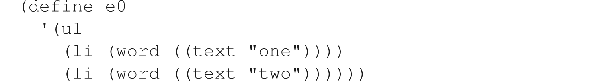
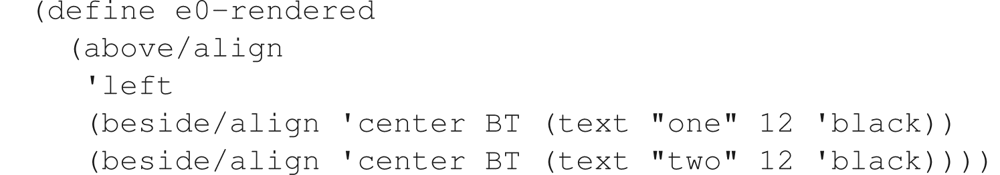
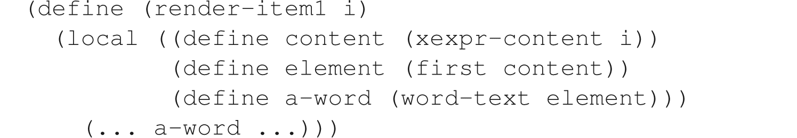
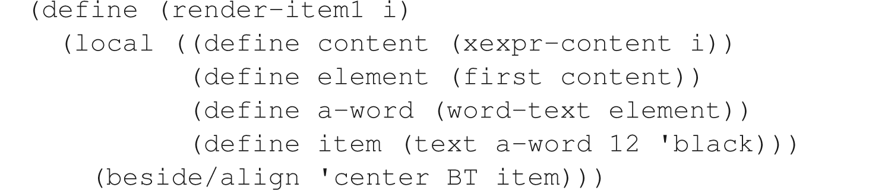
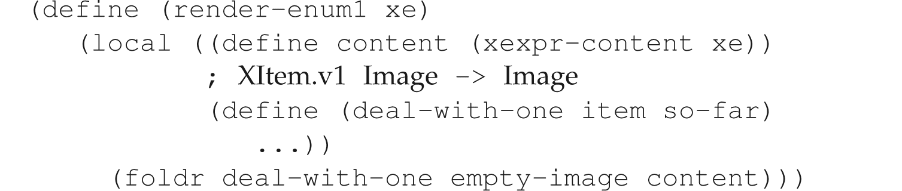
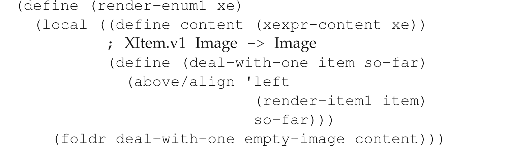
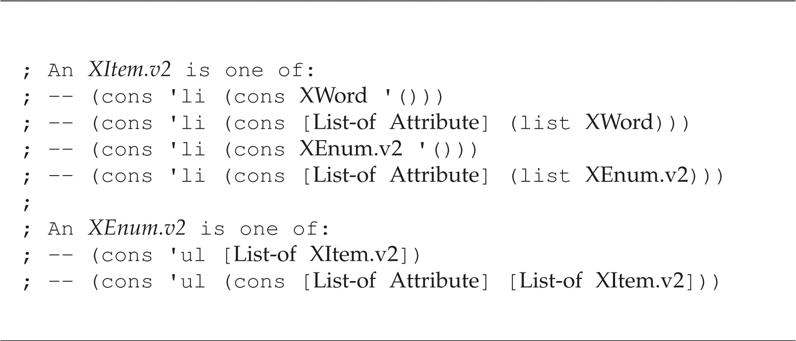
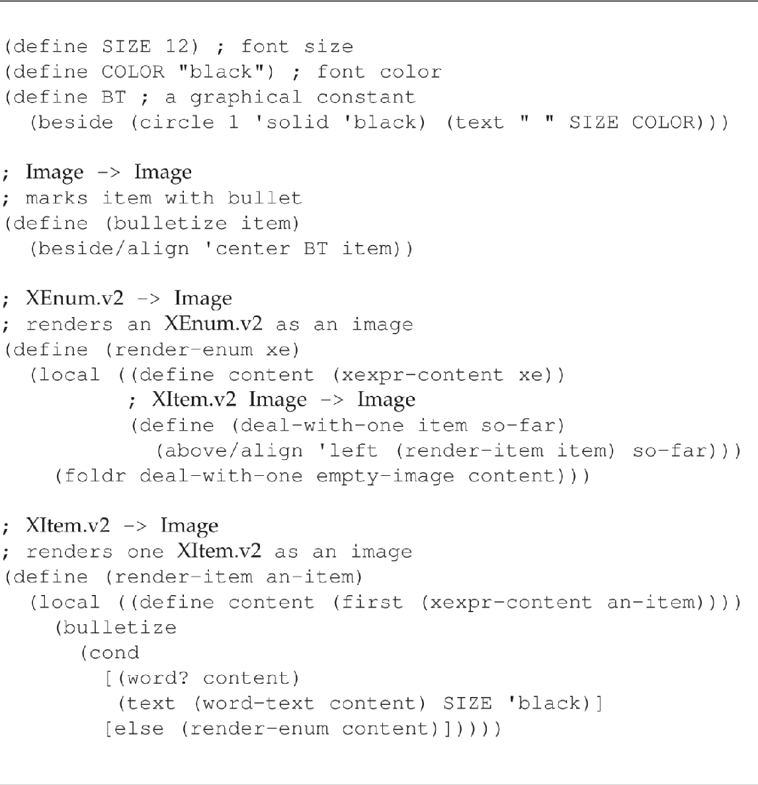

22.2 Rendering XML Enumerations
XML is actually a family of languages. People define dialects for specific channels of communication. For example, XHTML is the language for sending web content in XML format. In this section, we illustrate how to design a rendering function for a small snippet of XHTML, specifically the enumerations from the beginning of this chapter.
The ul tag surrounds a so-called unordered HTML list. Each item of this list is tagged with li, which tends to contain words but also other elements, even enumerations. With “unordered” HTML means is that each item is to be rendered with a leading bullet instead of a number.
Since Xexpr does not come with plain strings, it is not immediately obvious how to represent XHTML enumerations in a subset. One option is to refine the data representation one more time, so that an Xexpr could be a String. Another option is to introduce a representation for text:
; An XWord is '(word ((text String))).
Here, we use this second option; Racket, the language from which the teaching languages are derived, offers libraries that include String in Xexpr.
Exercise 370. Make up three examples for XWords. Design word?, which checks whether some ISL+ value is in XWord, and word-text, which extracts the value of the only attribute of an instance of XWord. 
Exercise 371. Refine the definition of Xexpr so that you can represent XML elements, including items in enumerations, that are plain strings.
Given the representation of words, representing an XHTML-style enumeration of words is straightforward:
; An XEnum.v1 is one of:
; -- (cons 'ul [List-of XItem.v1])
; -- (cons 'ul (cons Attributes [List-of XItem.v1]))
; An XItem.v1 is one of:
; -- (cons 'li (cons XWord '()))
; -- (cons 'li (cons Attributes (cons XWord '())))
For completeness, the data definition includes attribute lists, even though they do not affect rendering.
Stop! Argue that every element of XEnum.v1 is also in XExpr.
Here is a sample element of XEnum.v1:

It corresponds to the inner enumeration of the example from the beginning of the chapter. Rendering it with help from the 2htdp/image library should yield an image like this:
The radius of the bullet and the distance between the bullet and the text are matters of aesthetics; here the idea matters.
We developed these expressions in the interactions area. What would you do?
To create this kind of image, you might use this ISL+ program:

assuming BT is a rendering of a bullet.
Now let’s design the function carefully. Since the data representation requires two data definitions, the design recipe tells you that you must design two functions in parallel. A second look reveals, however, that in this particular case the second data definition is disconnected from the first one, meaning we can deal with it separately.
Furthermore, the definition for XItem.v1 consists of two clauses, meaning the function itself should consist of a cond with two clauses. The point of viewing XItem.v1 as a sub-language of Xexpr, however, is to think of these two clauses in terms of Xexpr selector functions, in particular, xexpr-content. With this function we can extract the textual part of an item, regardless of whether it comes with attributes or not:
; XItem.v1 -> Image
; renders an item as a "word" prefixed by a bullet
(define (render-item1 i)
(… (xexpr-content i) …))
In general, xexpr-content extracts a list of Xexpr; in this specific case, the list contains exactly one XWord, and this word contains one text:

From here, it is straightforward:

After extracting the text to be rendered in the item, it is simply a question of rendering it as text and equipping it with a leading bullet; see the examples above for how you might discover this last step.
Exercise 372. Before you read on, equip the definition of render-item1 with tests. Make sure to formulate these tests in such a way that they don’t depend on the BT constant. Then explain how the function works; keep in mind that the purpose statement explains what it does.
Now we can focus on the design of a function that renders an enumeration. Using the example from above, the first two design steps are easy:
; XEnum.v1 -> Image
; renders a simple enumeration as an image
(check-expect (render-enum1 e0) e0-rendered)
(define (render-enum1 xe) empty-image)
The key step is the development of a template. According to the data definition, an element of XEnum.v1 contains one interesting piece of data, namely, the (representation of the) XML elements. The first item is always 'ul, so there is no need to extract it, and the second, optional item is a list of attributes, which we ignore. With this in mind, the first template draft looks just like the one for render-item1:
(define (render-enum1 xe)
(… (xexpr-content xe) …)) ; [List-of XItem.v1]
While the data-oriented design recipe tells you that you should design a separate function whenever you encounter a complex form of data, the abstraction-based design recipe from part III tells you to reuse an existing abstraction, say, a list-processing function from figures 95 and 96, when possible. Given that render-enum1 is supposed to process a list and create a single image from it, the only two list-processing abstractions whose signatures fit the bill are foldr and foldl. If you also study their purpose statements, you see a pattern that is like the e0-rendered example above, especially for foldr. Let’s try to use it, following the reuse design recipe:

From the type matching, you also know that:
1. the first argument to foldr must be a two-argument function;
2. the second argument must be an image; and
3. the last argument is the list representing XML content.
Naturally empty-image is the correct starting point.
This design-by-reuse focuses our attention on the function to be “folded” over the list. It turns one item and the image that foldr has created so far into another image. The signature for deal-with-one articulates this insight. Since the first argument is an XItem.v1, render-item1 is the function that renders it. This yields two images that must be combined: the image of the first item and the image of the rest of the items. To stack them, we use above:

Flat enumerations are common, but they are also a simple approximation of the full-fledged case. In the real world, web browsers must cope with arbitrarily nested enumerations that arrive over the web. In XML and its web browser dialect XHTML, nesting is straightforward. Any element may show up as the content of any other element. To represent this relationship in our limited XHTML representation, we say that an item is either a word or another enumeration. Figure 127 displays the second revision of the data definition. It includes a revision of the data definition for enumerations so that the first definition refers to the correct form of item.

Figure 127: A realistic data representation of XML enumerations
Are you wondering whether arbitrary nesting is the correct way to think about this problem? If so, develop a data definition that allows only three levels of nesting and then use it.
The next question is how this change to the data definition affects the rendering functions. Put differently, we need to revise render-enum1 and render-item1 so that they can cope with XEnum.v2 and XItem.v2, respectively. Software engineers face these kinds of questions all the time, and it is another situation where the design recipe shines.
Figure 128 shows the complete answer. Since the change is confined to the data definitions for XItem.v2, it should not come as a surprise that the change to the rendering program shows up in the function for rendering items. While render-item1 does not need to distinguish between different forms of XItem.v1, render-item is forced to use a cond because XItem.v2 lists two different kinds of items. Given that this data definition is close to one from the real world, the distinguishing characteristic is not something simple—like '() vs cons—but a specific piece of the given item. If the item’s content is a Word, the rendering function proceeds as before. Otherwise, the item contains an enumeration, in which case render-item uses render-enum to deal with the data, because the data definition for XItem.v2 refers back to XEnum.v2 precisely at this point.

Figure 128: Refining functions to match refinements of data definitions
Exercise 373. Figure 128 is missing test cases. Develop test cases for all the functions.
Exercise 374. The data definitions in figure 127 use list. Rewrite them so they use cons. Then use the recipe to design the rendering functions for XEnum.v2 and XItem.v2 from scratch. You should come up with the same definitions as in figure 128.
Exercise 375. The wrapping of cond with
(beside/align 'center BT …)
may surprise you. Edit the function definition so that the wrap-around appears once in each clause. Why are you confident that your change works? Which version do you prefer?
Exercise 376. Design a program that counts all "hello"s in an instance of XEnum.v2.
Exercise 377. Design a program that replaces all "hello"s with "bye" in an enumeration.